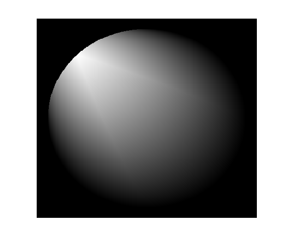
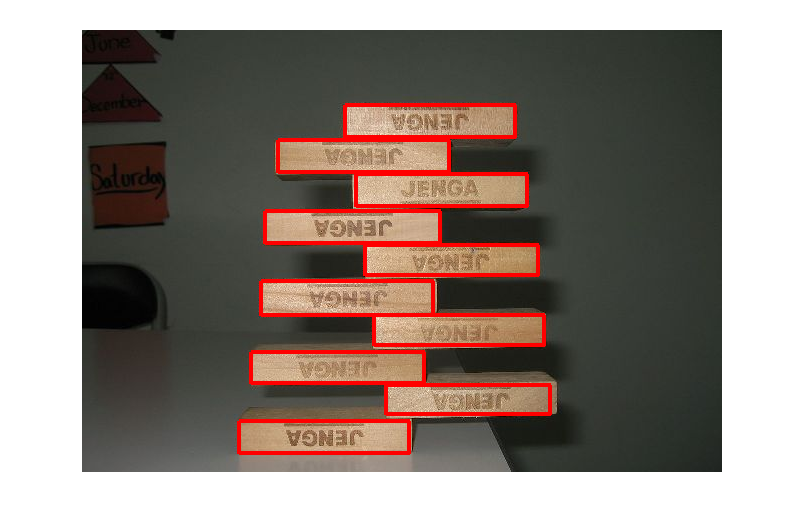

Tutorial for Inscribed_Rectangle Package
By Jarek Tuszynski
Inscribed_Rectangle package provides 2 low level computer vision / image analysis functions able to locate largest square or rectangle inscribed inside arbitrary shape defined by a binary mask (black and white image). Only rectangles with vertical/horizontal edges are considered. The functions proved can be used as tools for larger image segmentation problems.
Contents
- Change History
- Licence
- Create a mask defining a circle
- Run FindLargestSquares and return results.
- Use S to find the largest Square inscribed in the circle
- Run FindLargestRectangles and return results.
- Find the largest Rectangle inscribed in the circle, with size measured by area
- Find the largest Rectangle inscribed in the circle with size measured as rectangle circumference with vertical edges having twice the weight of the horizontal edges
- Find the largest Rectangle inscribed in the circle with size measured as rectangle circumference with horizontal edges having 3 times the weight of the vertical edges
- Load an image of Jenga tower and create a boolean mask of the tower shape.
- Use FindLargestRectangles to locate rectangular blocks in the image
Change History
- 2010-07-07 - original version
Licence
The package is distributed under BSD License
format compact; % viewing preference clear variables; close all; type('license.txt')
Copyright (c) 2010, Jaroslaw Tuszynski
All rights reserved.
Redistribution and use in source and binary forms, with or without
modification, are permitted provided that the following conditions are
met:
* Redistributions of source code must retain the above copyright
notice, this list of conditions and the following disclaimer.
* Redistributions in binary form must reproduce the above copyright
notice, this list of conditions and the following disclaimer in
the documentation and/or other materials provided with the distribution
THIS SOFTWARE IS PROVIDED BY THE COPYRIGHT HOLDERS AND CONTRIBUTORS "AS IS"
AND ANY EXPRESS OR IMPLIED WARRANTIES, INCLUDING, BUT NOT LIMITED TO, THE
IMPLIED WARRANTIES OF MERCHANTABILITY AND FITNESS FOR A PARTICULAR PURPOSE
ARE DISCLAIMED. IN NO EVENT SHALL THE COPYRIGHT OWNER OR CONTRIBUTORS BE
LIABLE FOR ANY DIRECT, INDIRECT, INCIDENTAL, SPECIAL, EXEMPLARY, OR
CONSEQUENTIAL DAMAGES (INCLUDING, BUT NOT LIMITED TO, PROCUREMENT OF
SUBSTITUTE GOODS OR SERVICES; LOSS OF USE, DATA, OR PROFITS; OR BUSINESS
INTERRUPTION) HOWEVER CAUSED AND ON ANY THEORY OF LIABILITY, WHETHER IN
CONTRACT, STRICT LIABILITY, OR TORT (INCLUDING NEGLIGENCE OR OTHERWISE)
ARISING IN ANY WAY OUT OF THE USE OF THIS SOFTWARE, EVEN IF ADVISED OF THE
POSSIBILITY OF SUCH DAMAGE.
Create a mask defining a circle
[X,Y] = meshgrid(-200:200, -200:200); BW = (X.^2 + Y.^2)<180^2; figure(1); imshow(BW)

Run FindLargestSquares and return results.
S stores for each pixel the size of the largest all-white square with its upper-left corner at that pixel
S = FindLargestSquares(BW);
imagesc(S); axis off
 Use S to find the largest Square inscribed in the circle
imshow(BW) [~, pos] = max(S(:)); [r c] = ind2sub(size(S), pos); rectangle('Position',[c,r,S(r,c),S(r,c)], 'EdgeColor','r', 'LineWidth',3);
Run FindLargestRectangles and return results.
C stores for each pixel the area of the largest all-white rectangle with its upper-left corner at that pixel. W and H store width and height of those rectangles
[C H W] = FindLargestRectangles(BW, [0 0 1]); subplot(2,2,1); imagesc(BW); axis off; axis equal; colormap gray title('Circle mask'); subplot(2,2,2); imagesc(H); axis off; axis equal; colormap gray title('Height of the rectangles'); subplot(2,2,3); imagesc(W); axis off; axis equal; colormap gray title('Width of the rectangles'); subplot(2,2,4); imagesc(C); axis off; axis equal; colormap gray title('Area of the rectangles');
Find the largest Rectangle inscribed in the circle, with size measured by area
close all; imshow(BW) [~, pos] = max(C(:)); [r c] = ind2sub(size(S), pos); rectangle('Position',[c,r,W(r,c),H(r,c)], 'EdgeColor','r', 'LineWidth',3);
Find the largest Rectangle inscribed in the circle with size measured as rectangle circumference with vertical edges having twice the weight of the horizontal edges
[C H W] = FindLargestRectangles(BW, [2 1 0]); imshow(BW) [~, pos] = max(C(:)); [r c] = ind2sub(size(S), pos); rectangle('Position',[c,r,W(r,c),H(r,c)], 'EdgeColor','r', 'LineWidth',3);
Find the largest Rectangle inscribed in the circle with size measured as rectangle circumference with horizontal edges having 3 times the weight of the vertical edges
[C H W] = FindLargestRectangles(BW, [1 3 0]); imshow(BW) [tmp pos] = max(C(:)); [r c] = ind2sub(size(S), pos); rectangle('Position',[c,r,W(r,c),H(r,c)], 'EdgeColor','r', 'LineWidth',3);
Load an image of Jenga tower and create a boolean mask of the tower shape.
Image by "Jason7825" was copied from http://commons.wikimedia.org/wiki/File:Jenga_arrangement.jpg and is distributed under CC-BY-SA-3.0 & GDFL licenses
{kind=link}
I = imread('Jenga_arrangement.jpg'); imshow(I) BW = rgb2gray(I)>115; BW = imfill(BW,'holes'); figure(2); imshow(BW)

Use FindLargestRectangles to locate rectangular blocks in the image
imshow(I) for i = 1:10 [C H W] = FindLargestRectangles(BW, [0 10 1]); [tmp pos] = max(C(:)); [r c] = ind2sub(size(C), pos); rectangle('Position',[c,r,W(r,c),H(r,c)], 'EdgeColor','r', 'LineWidth',3); BW( r:(r+H(r,c)-1), c:(c+W(r,c)-1) ) = 0; end